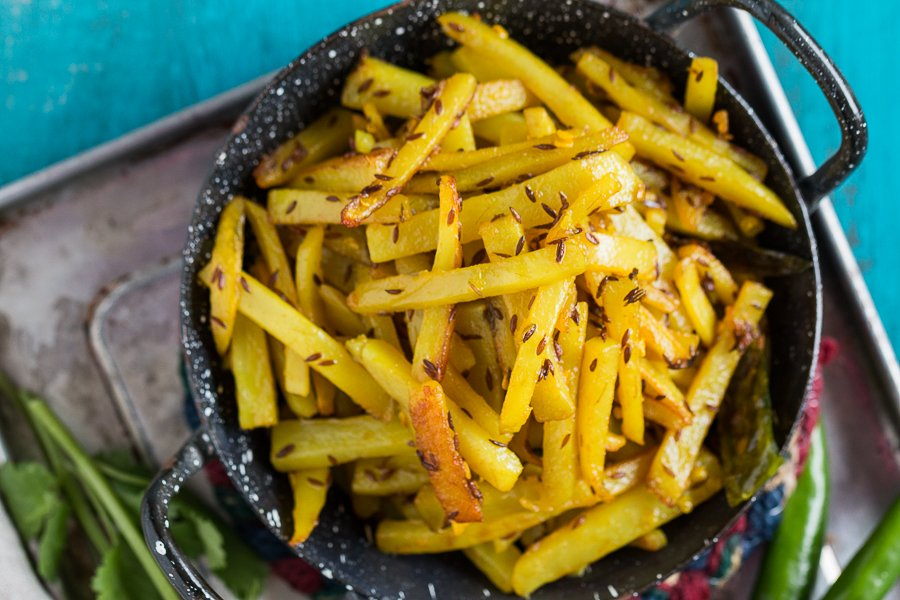
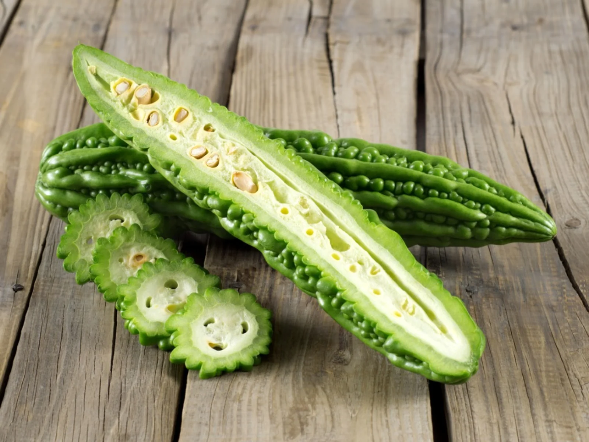

Stir-Fried Spiced Shredded Potatoes (Aloo Baazi)
Here we are, Aloo Baazi. It is a dish of just potatoes fried with some
mellow whole spices and chillies, which is enjoyed by many bengalis around the world.

It may seem pretty boring, it's literally just potatoes fried in a pan.
However, it is the simplicity that makes it so good. Something that is mellow in
spice, not too difficult to make, comforting, soft, and they're potatoes at
the end of the day (pretty hard to mess up).
Ingredients:
- 3 large potatoes
- 1 Tbps asian 5 spice or use the list below
- cumin seeds
- fennel seeds
- coriander seeds
- some other stuff I have no idea
- just go to a bengali shop and say "Ami Faas Foron Sai"
- 1 dried bayleaf
- 2 Tbsp Tumeric powder
Equipment:
- 1 medium sized spoon (preferably wood)
- 1 large pan (including lid)
- 1 cereal bowl
- 1 mini plate
- 1 cutting board
- This is optional: 1 mandelin.
- 1 large sharp knife

Want to try some other recipes?